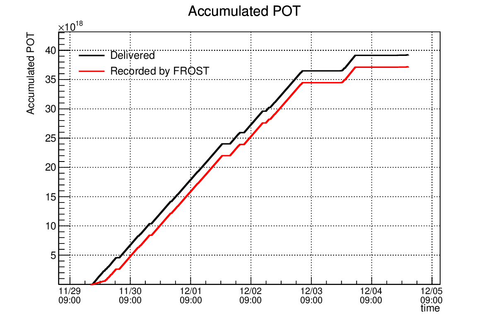
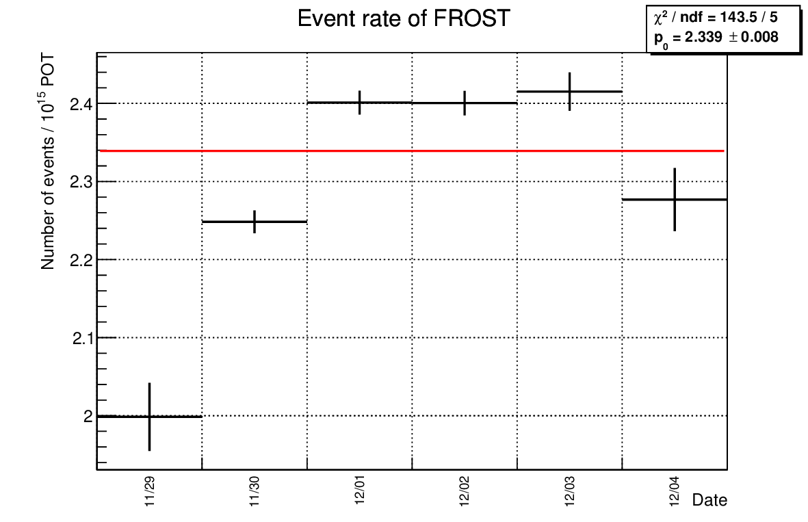
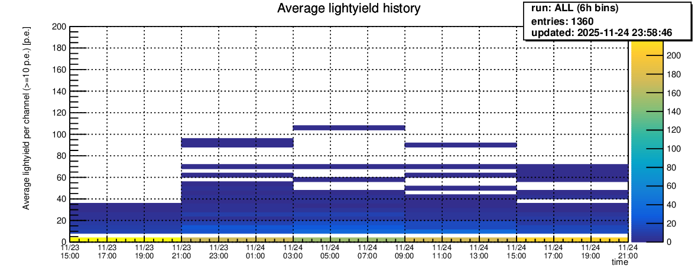

✅ All good: data updated within the last 30 minutes.
🔊 To allow alarms to play automatically, please click:
NINJA FROST monitor page
Status of DAQ for FROST in NINJA physics run c (E71c)
These results are updated automatically.
Latest dat file
| Current run |
Loading... |
| Last modified time of the latest dat file (JST) |
Loading... |
Status Lamp:
Data set for accumulated POT
| Period |
|
| Delivered spills |
|
| Recorded spills |
|
| Delivered POT |
|
| Recorded POT |
|
| Data taking efficiency |
|
Accumulated POT

Event rate (or sand muon rate) stability

Data quality check
1. Unixtime

2. Spill Number

3. TDC
The following four plots are shown for the latest run: leading, trailing, leading_fromadc, trailing_fromadc.


4. Average light yield per channel

5. Average light yield history

6. xg vs yg